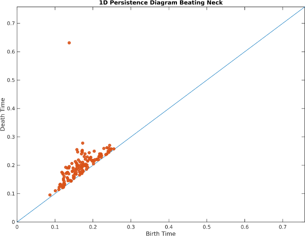
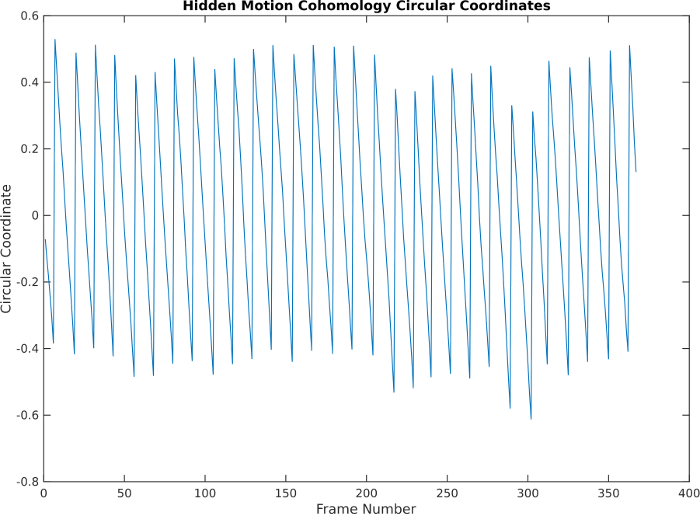

Hidden Motion
We conclude this work by examining a video which has hidden periodic motion. Here is a video of the author sitting completely still not breathing, and there appears to be very little motion:However, when we look at PCA, ignoring the first few components which correspond to drift, we see a cyclic pattern along a cylinder:
And when we look at the 1D persistence diagram, we see a strong 1D persistence class rising above the noise:

What's going on here? If we apply phase-based video magnification techniques to the video to boost subtle signals and show PCA again, we see what's actually been captured by the sliding window embedding is something related to the person's heartbeat:
Notice, for example, how the subclavic artery causes the collarbone to move up and down with each heartbeat, and notice how the person shakes back and forth twice for each heartbeat. It's this shaking that causes the delay embedding to go through two loops for each beat. Indeed, the cohomology circular coordinate parameterizes this motion nicely:

Based on the framerate of 25 frames per second and the observation that the circular coordinates are picking up on twice the heartbeat, we estimate the average heartrate of this person to be between 61 and 62 beats per minute.